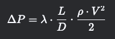
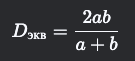
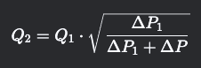
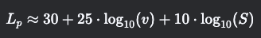
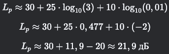
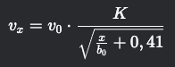
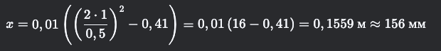
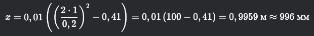

Расчет падения расхода воздуха в канале
Расчет падения расхода воздуха в канале при известном сопротивлении на один метр (удельных потерях давления) можно выполнить, используя методы аэродинамики вентиляционных систем.
Основные формулы и подход
Удельные потери давления (R) – это потери давления на 1 метр длины воздуховода (Па/м или кгс/м²/м).
Общие потери давления (ΔP) в прямом участке воздуховода рассчитываются по формуле:
где:
- R – удельные потери давления (Па/м),
L – длина участка (м).
Связь потерь давления с расходом воздуха определяется по формуле Дарси-Вейсбаха (для круглых воздуховодов):

где:
- λ – коэффициент трения,
- D – диаметр воздуховода (м),
- ρ – плотность воздуха (~1,2 кг/м³ при нормальных условиях),
V – скорость воздуха (м/с).
Для прямоугольных воздуховодов вместо D используется эквивалентный диаметр:

где:
a и b – стороны прямоугольного сечения.
Расход воздуха (Q) связан со скоростью:
где:
- S – площадь сечения воздуховода (м²).
Практический расчет
Если известны:
удельное сопротивление R (Па/м),
длина участка L (м),
начальный расход Q~1~ (м³/с),
то можно определить падение расхода из-за потерь давления.
Однако, расход воздуха в системе зависит от характеристики вентилятора и сети. Если система работает без вентилятора (естественная вентиляция), то падение расхода можно оценить через баланс давления:

где:
- ΔP~1~ – исходное давление в системе (до потерь),
- ΔP=R⋅L – потери на участке.
Если система с вентилятором, то нужно учитывать характеристику вентилятора и построить совместный график (сетевую характеристику + характеристику вентилятора).
Пример расчета
Дано:
Удельное сопротивление R=0,5 Па/м,
Длина участка L=10 м,
Начальный расход Q~1~=1000 м³/ч,
Давление вентилятора P~вент~=150 Па.
Общие потери на участке:
- Новое давление в системе:

- Если вентилятор имеет квадратичную характеристику, то:
 Q~2~≈0,983⋅1000=983 м³/ч
Таким образом, расход упал на ~1,7%.
Q~2~≈0,983⋅1000=983 м³/ч
Таким образом, расход упал на ~1,7%.
Вывод
Если сопротивление невелико по сравнению с давлением вентилятора, то падение расхода будет небольшим. Для точных расчетов нужно знать характеристику вентилятора и полную сетевую характеристику.
Если у вас есть дополнительные данные (форма воздуховода, скорость, тип вентилятора), можно уточнить расчет.
Расчет шумовых характеристик щелевого диффузора
Расчет шумовых характеристик щелевого диффузора зависит от скорости воздуха, геометрии щелей и акустических свойств системы
1. Основные источники шума в щелевом диффузоре
Турбулентный шум – возникает из-за вихреобразования при прохождении воздуха через узкие щели.
Резонансные явления – если щели или полости диффузора создают акустический резонанс.
Виброакустический шум – если диффузор вибрирует из-за потока.
2. Основные формулы и методики оценки
2.1. Оценочный расчет уровня звукового давления (Lp)
Уровень шума щелевого диффузора можно оценить по эмпирическим зависимостям. Один из подходов – использование формулы для шума воздушного потока в решетках и диффузорах:
 где:
где:
- L~p~– уровень звукового давления (дБ),
- ρ – плотность воздуха (~1,2 кг/м³),
- v – скорость воздуха в щели (м/с),
- S – площадь щелей (м²),
- P~0~ – опорное звуковое давление (2·10⁻⁵ Па),
- K – эмпирическая константа (зависит от конструкции, обычно 20–40 дБ).
2.2. Упрощенная формула (для практических оценок)
Для щелевых диффузоров часто используют зависимость:
 где:
- v – скорость воздуха в щели (м/с),
- S – площадь щелей (м²),
Пример:
- Скорость в щели v=3 м/с,
- Площадь щелей S=0,01 м².
- 
2.3. Корректировка по стандартам (например, VDI 2081, ISO 5135)
Шумовые характеристики диффузоров часто приводятся в каталогах производителей в виде октавных спектров (63 Гц – 8 кГц) в зависимости от скорости.
Если известны акустические данные диффузора, можно использовать:
 где:
где:
- L~p,ном~ – уровень шума при номинальной скорости v~ном~,
- v – текущая скорость.
3. Влияние геометрии щелей на шум
- Узкие щели (менее 5 мм) дают более высокочастотный шум.
- Широкие щели (более 10 мм) – низкочастотный гул.
- Зазоры и неровности увеличивают турбулентность и шум.
4. Как снизить шум щелевого диффузора?
- Уменьшить скорость воздуха (оптимально 2–4 м/с в щели).
- Увеличить количество щелей (распределить поток).
- Использовать звукопоглощающие вставки.
- Применить плавные закругления на входе/выходе.
Вывод
Для точного расчета лучше использовать данные производителя или акустическое моделирование (например, в COMSOL, SolidWorks Flow Simulation). Оценочные формулы дают погрешность ±5 дБ.
Расчет длины струи воздуха
Расчет длины струи воздуха от щелевого диффузора до сечения, где скорость снижается до заданных значений (0,2 м/с или 0,5 м/с), выполняется на основе теории свободных изотермических струй. Основные параметры, влияющие на длину струи:
1. Основные формулы и подход
Для плоской струи (щелевой диффузор с большой длиной по сравнению с высотой щели) длина струи определяется:
1.1. Скорость в струе на расстоянии x
Скорость в осевой линии струи убывает по закону:
 где:
- v~x~ – скорость на расстоянии x от щели (м/с),
- v~0~ – начальная скорость истечения из щели (м/с),
- b~0~ – начальная ширина щели (м),
- K – коэффициент, зависящий от формы щели (для плоской струи K≈1).
1.2. Расстояние x, где скорость падает до v~x~
Из формулы выше можно выразить расстояние:

2. Пример расчета
Дано:
- Начальная скорость v~0~ =2 м/с,
- Ширина щели b~0~ =0,01 м (10 мм),
- Требуется найти расстояние, где v~x~ =0,5 м/с и v~x~ =0,2 м/с.
2.1. Для v~x~=0,5 м/с:

2.2. Для v~x~=0,2 м/с:

3. Учет турбулентности и препятствий
Формула справедлива для свободной струи без препятствий. Если есть:
- Потолок/стены – струя тормозится быстрее (используются поправочные коэффициенты).
- Разница температур – если приточный воздух теплее/холоднее, струя отклоняется.
4. Практические рекомендации
- Для комфортной вентиляции скорость на выходе из диффузора обычно 1,5–3 м/с.
- Для точных расчетов лучше использовать CFD-моделирование (например, Ansys Fluent, OpenFOAM).
Вывод
Длина струи до скорости 0,5 м/с ≈ 15–30 см (при v~0~ =2–4 м/с), до 0,2 м/с ≈ 1–2 м.